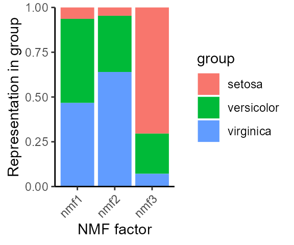
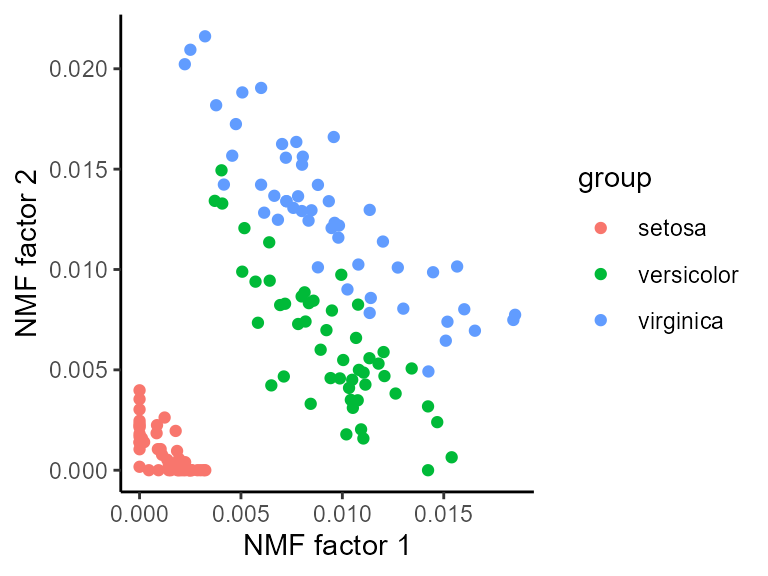
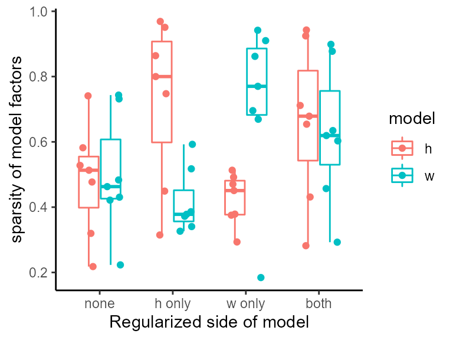

Getting Started with NMF
Zach DeBruine
2022-09-26
Source:vignettes/getting_started.Rmd
getting_started.RmdThis vignette demonstrates basic usage of the
RcppML::nmf function and visualization of the results.
Install RcppML
Install the RcppML R package from CRAN or the development version from GitHub.
install.packages('RcppML') # install CRAN version
# devtools::install_github("zdebruine/RcppML") # compile dev versionWhat is NMF?
Non-negative Matrix Factorization (NMF) finds additive signals in non-negative data in terms of the features and samples associated with those signals.
NMF gives an approximation of an input matrix as the cross-product of two low-rank submatrices:
\[A = wdh\]
Here, \(A\) is the input matrix, \(w\) is a tall matrix of features in rows and factors in columns, and \(h\) is a wide matrix of factors in rows and samples in columns.
RcppML::nmf introduces one more important component into
this system, a scaling diagonal, \(d\).
This scaling diagonal provides:
- consistent factor scalings throughout model fitting
- robustness across random restarts
- symmetry in factorization of symmetric matrices
- a means for convex L1 regularization
Running NMF
Run NMF on the iris dataset. We need to specify a rank
(k) for the factorization, and will also specify the
seed for random initialization for reproducibility:
library(RcppML)
library(Matrix)
library(ggplot2)
library(cowplot)
data(iris)
model <- nmf(iris[,1:4], k = 3, seed = 1)
model
#> 150 x 4 x 3 factor model of class "nmf"
#> @ w
#> nmf1 nmf2 nmf3
#> [1,] 0.0014403134 0.0002357974 0.0147753897
#> [2,] 0.0024259960 . 0.0129176731
#> [3,] 0.0014543773 0.0001794741 0.0134988417
#> [4,] 0.0019489186 0.0005632185 0.0124668937
#> [5,] 0.0001151302 0.0015972125 0.0148072020
#> [6,] . 0.0030264275 0.0151420941
#> [7,] . 0.0022133280 0.0132919365
#> ...suppressing 143 rows
#>
#> @ d
#> 747.8924 726.0631 605.7889
#>
#> @ h
#> Sepal.Length Sepal.Width Petal.Length Petal.Width
#> nmf1 0.426857790 0.123598613 0.355488027 0.094055570
#> nmf2 0.340537544 0.193888276 0.320817305 0.144756875
#> nmf3 0.511768434 0.372576543 0.107677454 0.007977569
#>
#> @ misc
#> List of 4
#> $ tol : num 9.76e-05
#> $ iter : num 14
#> $ runtime: 'difftime' num 0.0313060283660889
#> ..- attr(*, "units")= chr "secs"
#> $ w_init : num [1:3, 1:150] 0.266 0.372 0.573 0.908 0.202 ...Visualizing NMF Models
The result of RcppML::nmf is an S34object of class
nmf. The nmf class has many useful
methods:
methods(class = "nmf")
#> [1] $ [ [[ align biplot coerce dim dimnames
#> [9] evaluate head predict prod show sort sparsity subset
#> [17] summary t
#> see '?methods' for accessing help and source codeOne of these useful methods is summary (which in turn
has a plot method):
species_stats <- summary(model, group_by = iris$Species)
species_stats
#> group factor stat
#> 1 setosa nmf1 0.06364741
#> 2 versicolor nmf1 0.46947182
#> 3 virginica nmf1 0.46688076
#> 4 setosa nmf2 0.04650387
#> 5 versicolor nmf2 0.31381639
#> 6 virginica nmf2 0.63967974
#> 7 setosa nmf3 0.70431244
#> 8 versicolor nmf3 0.22449607
#> 9 virginica nmf3 0.07119149
plot(species_stats, stat = "sum")
Notice how NMF factors capture variable information among iris species.
The biplot method for NMF (see ?biplot.nmf
for details) can compare the weights of different features or samples in
two factors:

Random Restarts
NMF is randomly initialized, thus results may be slightly different every time. To run NMF many times, set multiple seeds, and the best model will be returned.
Here we run 10 factorizations at a higher tolerance, and the best model is returned:
model2 <- nmf(iris[,1:4], k = 3, seed = 1:10, tol = 1e-5)
# MSE of model from single random initialization
evaluate(model, iris[,1:4])
#> [1] 0.007247329
# MSE of best model among 10 random restarts
evaluate(model2, iris[,1:4])
#> [1] 0.006100573The second model is better.
L1 Regularization
Sparse factors contain only a few non-zero values and make it easy to identify features or samples that are important.
L1/LASSO regularization is the best method for introducing sparsity into a linear model.
data(movielens)
ratings <- movielens$ratings
model_L1 <- nmf(ratings, k = 7, L1 = 0.1, seed = 123, mask_zeros = TRUE)
sparsity(model_L1)
#> factor sparsity model
#> 1 nmf1 0.6193432 w
#> 2 nmf2 0.8774244 w
#> 3 nmf3 0.6346005 w
#> 4 nmf4 0.6030515 w
#> 5 nmf5 0.8986294 w
#> 6 nmf6 0.2927334 w
#> 7 nmf7 0.4569434 w
#> 8 nmf1 0.6786885 h
#> 9 nmf2 0.2819672 h
#> 10 nmf3 0.6540984 h
#> 11 nmf4 0.7114754 h
#> 12 nmf5 0.4311475 h
#> 13 nmf6 0.9245902 h
#> 14 nmf7 0.9426230 hThe sparsity S3 method for class nmf makes
it easy to compute the sparsity of factors, as done above.
Note that mask_zeros = TRUE in the example above. This
is because zero-valued ratings are missing, and thus should not be
considered during factorization.
In the above example, we regularized both \(w\) and \(h\), however each model can also be regularized separately:
model_no_L1 <- nmf(ratings, k = 7, L1 = 0, seed = 123, mask_zeros = TRUE)
model_L1_h <- nmf(ratings, k = 7, L1 = c(0, 0.1), seed = 123, mask_zeros = TRUE)
model_L1_w <- nmf(ratings, k = 7, L1 = c(0.1, 0), seed = 123, mask_zeros = TRUE)
# summarize sparsity of all models in a data.frame
df <- rbind(sparsity(model_no_L1), sparsity(model_L1_h), sparsity(model_L1_w), sparsity(model_L1))
df$side <- c(rep("none", 14), rep("h only", 14), rep("w only", 14), rep("both", 14))
df$side <- factor(df$side, levels = unique(df$side))
ggplot(df, aes(x = side, y = sparsity, color = model)) +
geom_boxplot(outlier.shape = NA, width = 0.6) +
geom_point(position = position_jitterdodge()) + theme_classic() +
labs(x = "Regularized side of model", y = "sparsity of model factors")
Note how each side of the model is regularized independently.
L1 regularization does not significantly affect model loss:
# L1 = 0
evaluate(model_no_L1, movielens$ratings, mask = "zeros")
#> [1] 6.911534
# L1 = 0.1
evaluate(model_L1, movielens$ratings, mask = "zeros")
#> [1] 7.418375L1 regularization also does not significantly affect model
information at low penalties. Here we measure the cost of bipartite
matching between two models on a cosine distance matrix for
L1 = 0, L1 = 0.01, and
L1 = 0.1:
model_low_L1 <- nmf(movielens$ratings, k = 5, L1 = 0.01, seed = 123)
# cost of bipartite matching: L1 = 0 vs. L1 = 0.01
bipartiteMatch(1 - cosine(model_no_L1$w, model_low_L1$w))$cost / 10
#> [1] 0.03909451
# cost of bipartite matching: L1 = 0 vs. L1 = 0.1
bipartiteMatch(1 - cosine(model_no_L1$w, model_L1$w))$cost / 10
#> [1] 0.01713988These cosine angles (range 0 to 1) are very small – in other words, the models are very similar.
See ?RcppML::cosine for details on very fast computation
of cosine similarity.
In the above code, we computed cosine distance by subtracting cosine similarity from 1, matched on this cost matrix, and divided by 10 to find the mean cosine distance between matched factors. In both cases, factors correspond well.
Thus, regularized RcppML::nmf increases factor sparsity
without significantly affecting the loss or information content of the
model.
Prediction/Recommendation with NMF
NMF models learned on some samples can be projected to other samples, a common routine in recommendation systems or transfer learning.
For instance, we may train a model on some samples and then use it to predict the values in other samples. For instance, in this dataset we predict what bird species are likely to be encountered in a grid of land given information about just a fraction of the species.
data(hawaiibirds)
A <- hawaiibirds$counts
test_grids <- sample(1:ncol(A), ncol(A) / 5)
test_species <- sample(1:nrow(A), nrow(A) * 0.5)
# construct a sparse masking matrix for these species and grids
mask <- matrix(0, nrow(A), ncol(A))
mask[test_species, test_grids] <- 1
mask <- as(mask, "dgCMatrix")
model <- nmf(A, k = 15, mask = mask, tol = 1e-6, seed = 123)
df <- rbind(
data.frame(
"observed" = as.vector(A[test_species, test_grids]),
"predicted" = as.vector(prod(model)[test_species, test_grids]),
"set" = "test"
), data.frame(
"observed" = as.vector(A[-test_species, -test_grids]),
"predicted" = as.vector(prod(model)[-test_species, -test_grids]),
"set" = "train"
)
)
ggplot(df, aes(observed, predicted, color = set)) +
theme_classic() +
theme(aspect.ratio = 1) +
scale_y_continuous(expand = c(0, 0), limits = c(0, 1), trans = "sqrt") +
scale_x_continuous(expand = c(0, 0), limits = c(0, 1), trans = "sqrt") +
geom_point(size = 0.5) +
facet_grid(cols = vars(set)) +
theme(legend.position = "none")
#> Warning: Removed 150 rows containing missing values (geom_point).
Cross-validation for rank determination
Cross-validation can assist in finding a reasonable factorization rank.
Here we determine the optimal rank for the aml dataset
using cross-validation across three random replicates:
data(aml)
cv_data <- crossValidate(aml$data, k = 1:10, reps = 3)
head(cv_data)
#> rep k value
#> 1 1 1 0.03619901
#> 2 1 2 0.02974895
#> 3 1 3 0.02757322
#> 4 1 4 0.02599658
#> 5 1 5 0.02490966
#> 6 1 6 0.02413747Use the S4 plot method for the
nmfCrossValidation class to visualize:
plot(cv_data)
The optimal rank is around k = 8.